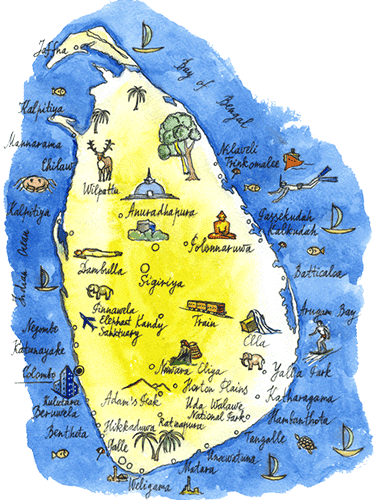
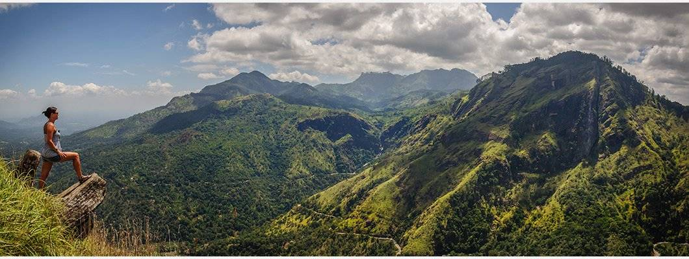
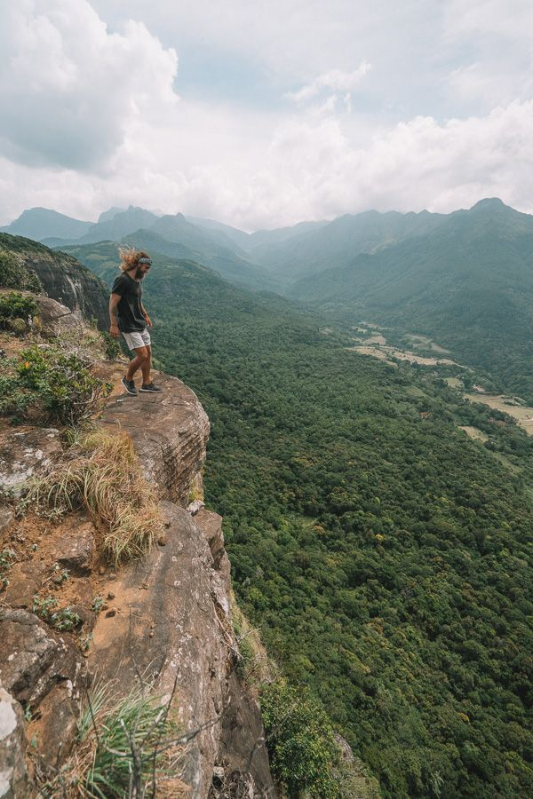
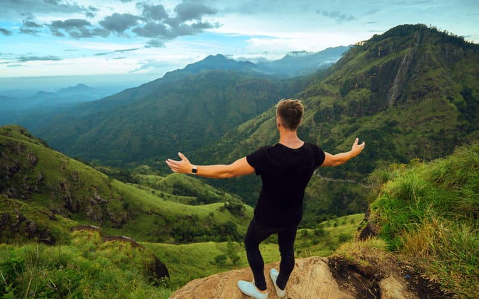
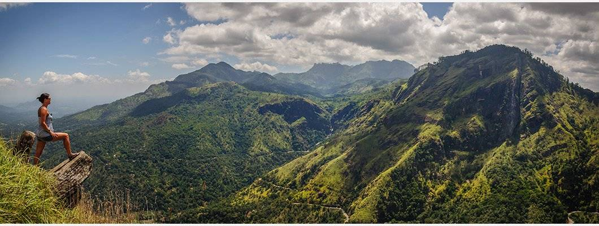
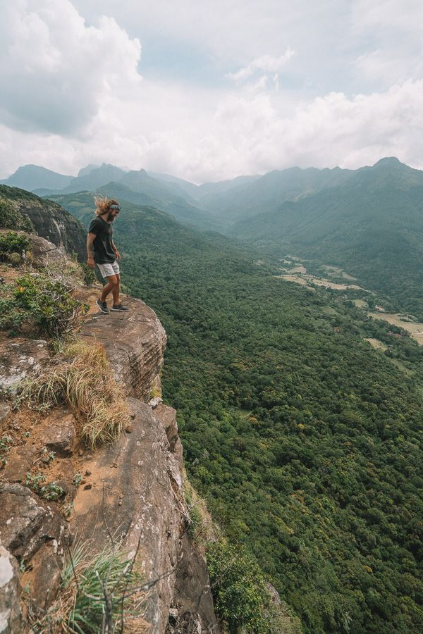
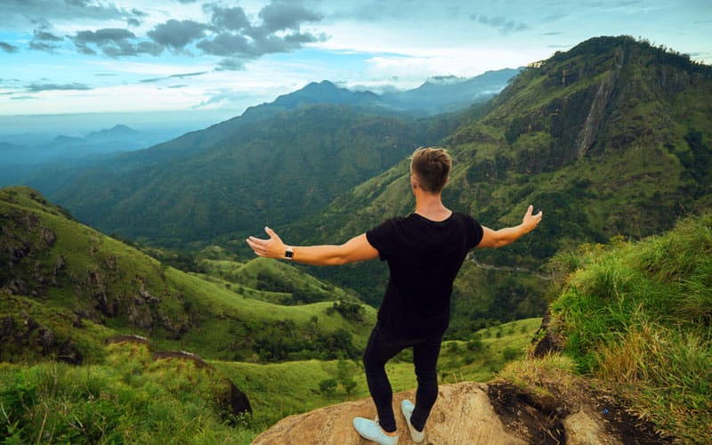

Knuckle mountain range

About
Knuckles Mountain Range as its name suggests, is formed in a shape of a human fist. Spreading over 234 sq km and bordering the Kandy and Matale Administrative Districts, Knuckles Mountain Range that consists of about 35 mountain peaks rising over 915 m is one of the most picturesque trekking and hiking sites of Sri Lanka. Though it isn’t very popular or recommended due to many leeches and extended duration. There are two main areas of access to the knuckles Mountain Range. The access point from the northern flank to Knuckles Mountain Range is Riverston; in the south eastern flank are Deanston and Meemure. The trails of the largely untouched and rugged terrain are Pitawala pathena trail, Alugallenna trail and Nitro Cave Trail(though it isnt mostly followed),the trail to the 5 peaks; Dothalugala trail and Mini World’s End (via Deanstone forest office). You can also go to the mostly visited rural village is Meemure which boasts a lot of other trails and crystal clear water streams in the Knuckles range. Ash Cave, a pre historic cave in the forest is a lovely site to enjoy camping. Nitro Cave is a large cave hidden deep inside the forest. These trails that are interconnected with the footpaths leading to cardamom gardens, Kithul palm groves and tea plantations are rich in birdlife.
Photo Gallery


 




